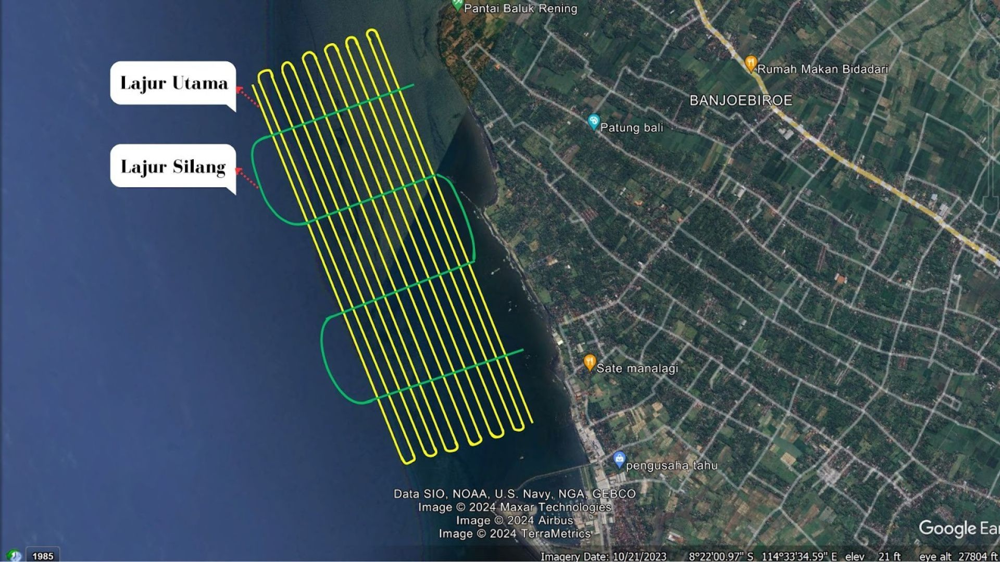

Evaluasi Survei Batimetri: Perencanaan Lajur Pemeruman dan Analisis Ordo Menggunakan Data Single Beam Echosounder
Latar belakang
Survei batimetri memetakan kedalaman dasar laut, dan kualitas hasilnya sangat bergantung pada dua hal: seberapa rapat lajur pemeruman direncanakan, dan seberapa teliti pengukuran kedalamannya. Lajur yang terlalu jarang membuat dasar laut tidak terwakili dengan baik, sedangkan pengukuran yang tidak teliti membuat data tidak bisa dipercaya.
Proyek ini mengevaluasi sebuah survei batimetri di area laut berukuran 5.467 m × 2.700 m. Evaluasi dilakukan dalam dua bagian, yaitu menghitung jumlah lajur utama dan lajur silang yang optimal, lalu menguji ketelitian data kedalaman terhadap standar ordo SNI pada setiap titik perpotongan lajur.
Data yang digunakan
| Data | Format Data | Jenis Data | Sumber |
|---|---|---|---|
| Dimensi area survei (panjang 5.467 m, lebar 2.700 m) dan skala peta 1:10.000 | Tabular | Sekunder | Data tugas |
| CrossDepth.xls: 781 pasangan kedalaman (Z1 dari lajur utama, Z2 dari lajur silang) pada titik cross section | Excel (.xls) | Sekunder | Data pengukuran single beam echosounder |
| Standar acuan: SNI 7469:2010, IHO S-44, dan SNI 7646:2010 | Dokumen | Sekunder | BSN dan IHO |
Metode
Perhitungan dilakukan di Microsoft Excel, dan rencana lajur divisualisasikan di Google Earth. Ada dua analisis.
1. Perencanaan lajur
Spasi lajur utama ditetapkan 0,01 × skala peta, dan spasi lajur silang 15 kali spasi lajur utama. Jumlah lajur diperoleh dengan membagi dimensi area dengan spasi tersebut.
| Komponen | Perhitungan | Hasil |
|---|---|---|
| Spasi lajur utama | 0,01 × 10.000 | 100 m |
| Jumlah lajur utama | 2.700 / 100 | 27 lajur |
| Panjang seluruh lajur utama | 5.467 × 27 | 147.609 m |
| Spasi lajur silang | 15 × 100 | 1.500 m |
| Jumlah lajur silang | 5.467 / 1.500 = 3,64, dibulatkan ke atas | 4 lajur |
| Panjang seluruh lajur silang | 2.700 × 4 | 10.800 m |
2. Analisis ordo
Pada setiap titik perpotongan, dibandingkan dua kedalaman hasil pengukuran, yaitu dari lajur utama (Z1) dan dari lajur silang (Z2). Selisih absolutnya dibandingkan dengan toleransi σ, yang dihitung dari kedalaman rata-rata titik tersebut:
σ = √( a² + (b × d)² ), dengan d = kedalaman rata-rata, serta a dan b adalah parameter tiap ordo.
Titik dinyatakan diterima bila selisih Z1 dan Z2 tidak melebihi σ, dan ditolak bila melebihi. Proses ini diulang untuk tiga ordo. Ordo khusus dipakai lebih dulu karena kedalaman maksimum data tidak lebih dari 20 m, lalu Ordo 1 dan Ordo 2 dihitung sebagai pembanding.
| Ordo | a | b |
|---|---|---|
| Khusus | 0,25 | 0,0075 |
| 1 | 0,5 | 0,013 |
| 2 | 1 | 0,023 |
Hasil dan pembahasan
1. Jumlah lajur dan konsekuensinya di lapangan
Area survei membutuhkan 27 lajur utama dengan spasi 100 m, dan 4 lajur silang. Spasi 100 m berasal dari 0,01 × skala peta, yaitu 1 cm pada peta 1:10.000. Artinya, di antara dua lajur ada jalur selebar 100 m yang tidak terukur langsung, dan kedalamannya hanya diperoleh lewat interpolasi. Fitur dasar laut yang lebih kecil dari sekitar 100 m, misalnya gundukan, cekungan kecil, atau objek tenggelam, berpeluang terlewat. Karena itu spasi lajur dikaitkan dengan skala peta: lajur harus cukup rapat untuk mendukung detail yang akan digambar.
Lajur silang memakai spasi 1.500 m, yaitu batas maksimum 15 × spasi lajur utama. Hasil bagi 5.467 / 1.500 = 3,64 dibulatkan ke atas menjadi 4 lajur, sehingga jarak antar lajur silang sebenarnya sekitar 1,4 km dan masih di bawah batas. Fungsinya bukan memetakan dasar laut, melainkan menjadi pembanding: kedalaman di titik perpotongan diukur dua kali dari lintasan berbeda, sehingga konsistensi data bisa diuji.
Dari sisi beban kerja, total panjang lintasan sekitar 158 km (147,6 km lajur utama + 10,8 km lajur silang). Pada kecepatan kapal 4 sampai 5 knot, itu setara kira-kira 17 sampai 21 jam pelayaran efektif, belum termasuk putar balik di ujung lajur. Jadi survei ini realistisnya memakan beberapa hari lapangan, dan jumlah lajur adalah keputusan yang langsung menentukan biaya, waktu, dan detail data.

2. Hasil uji ordo
Dari 781 pasangan kedalaman, jumlah titik yang diterima berbeda tajam antar ordo, padahal datanya sama persis. Yang berubah hanya toleransinya.
| Ordo | Rerata σ (m) | Diterima | Ditolak | Kesesuaian |
|---|---|---|---|---|
| Khusus | 0,279 | 317 | 464 | 40,58% |
| 1 | 0,544 | 538 | 243 | 68,89% |
| 2 | 1,070 | 760 | 21 | 97,3% |
3. Apa yang sebenarnya ditunjukkan data
Toleransi hampir datar di perairan dangkal. Pada rumus σ = √(a² + (b × d)²), suku kedalaman (b × d) kecil untuk kedalaman 12 sampai 18 m. Pada Ordo Khusus nilainya hanya 0,09 sampai 0,13 m, sehingga σ bergerak sempit di kisaran 0,267 sampai 0,284 m. Pada Ordo 2, σ nyaris konstan di kisaran 1,04 sampai 1,08 m. Jadi di perairan dangkal, toleransi ditentukan oleh kesalahan tetap (a), bukan oleh kedalaman. Konsekuensinya, lolos atau tidaknya sebuah titik praktis hanya bergantung pada besar selisih Z1 dan Z2.
Sebaran selisih dapat dibaca dari jumlah penolakan. Sebanyak 464 titik (59,4%) punya selisih di atas sekitar 0,28 m, 243 titik (31,1%) di atas sekitar 0,54 m, dan hanya 21 titik (2,7%) di atas sekitar 1,07 m, dengan selisih maksimum 1,405 m. Mayoritas data berselisih beberapa desimeter, dengan ekor panjang yang kecil. Kualitas data ini setara dengan "kurang lebih setengah meter", bukan "kurang lebih seperempat meter" seperti yang disyaratkan Ordo Khusus.
Persentase kesesuaian mengukur kelonggaran, bukan kualitas. Kesesuaian naik dari 40,58% ke 97,3%, sementara rerata σ naik sekitar 3,8 kali lipat (0,279 menjadi 1,070 m). Datanya tidak berubah, yang berubah hanya penggaris yang dipakai. Karena itu angka 97,3% pada Ordo 2 tidak berarti data paling akurat, melainkan paling mudah memenuhi syaratnya. Bila ambang kelulusan yang lazim, misalnya 95% titik, dipakai sebagai patokan, hanya Ordo 2 yang terlampaui.
Selisih terbesar tampak berpola, bukan acak. Pada baris yang ditampilkan di laporan, selisih besar mengelompok di dua rentang kedalaman, yaitu sekitar 12,4 sampai 12,9 m (selisih 0,36 sampai 0,45 m) dan sekitar 17,1 sampai 18,0 m (selisih 0,64 sampai 0,72 m). Semuanya bertanda sama, yaitu Z2 lebih kecil daripada Z1. Kesalahan acak biasanya bertanda campuran, jadi pola satu arah ini mengarah ke penyebab sistematis. Kandidatnya:
- Koreksi pasang surut yang tidak sinkron, karena lajur utama dan lajur silang dilalui pada waktu berbeda.
- Kecepatan suara di kolom air yang tidak dikoreksi sesuai kondisi saat pengukuran.
- Posisi perpotongan yang meleset pada dasar yang miring. Pergeseran horizontal beberapa meter pada lereng sekitar 5° saja sudah menghasilkan beda kedalaman sekitar 0,4 m.
- Gerakan kapal (heave, roll, pitch) dan draft transduser yang tidak terkompensasi.
Ini masih dugaan. Untuk memastikannya perlu dicek rata-rata selisih bertanda pada seluruh 781 titik, serta plot selisih terhadap waktu perekaman dan kemiringan dasar.
4. Implikasi untuk penggunaan data
Setiap ordo melayani kebutuhan yang berbeda. Menurut definisi IHO S-44, Ordo Khusus untuk pelabuhan, area sandar, dan alur kritis dengan ruang bebas di bawah lunas (under-keel clearance) yang sangat tipis. Ordo 1 untuk perairan dangkal dengan ruang bebas yang kurang kritis, dan Ordo 2 untuk perairan yang lebih dalam dan umum. Skala 1:10.000 dan kedalaman di bawah 20 m menunjukkan survei ini berkarakter pelabuhan atau pesisir, sehingga standar yang relevan adalah Ordo Khusus. Dengan hanya 40,58% titik lolos, data ini belum layak untuk keselamatan navigasi di alur atau area sandar, tetapi masih memadai untuk perencanaan awal atau gambaran umum morfologi dasar laut.
Kesimpulan
Perencanaan lajur menghasilkan 27 lajur utama (spasi 100 m) dan 4 lajur silang (spasi 1.500 m), dengan total lintasan sekitar 158 km. Spasi ini menjaga detail yang sesuai skala 1:10.000, tetapi fitur di bawah sekitar 100 m tetap berisiko terlewat.
Pada analisis ordo, data belum memenuhi Ordo Khusus: hanya 40,58% titik lolos, dan selisih kedalaman umumnya berada di kisaran beberapa desimeter. Kenaikan persentase pada Ordo 1 (68,89%) dan Ordo 2 (97,3%) berasal dari toleransi yang makin longgar, bukan dari data yang makin akurat. Selisih terbesar yang searah di kedalaman tertentu menunjukkan adanya sumber kesalahan sistematis yang layak ditelusuri.
Bila survei ditujukan untuk standar yang ketat, langkah perbaikannya adalah menyinkronkan koreksi pasang surut antar lajur, memperbarui profil kecepatan suara, mengompensasi gerakan kapal, dan memperketat penentuan posisi di titik perpotongan, lalu menguji ulang. Pelajaran utamanya, ordo harus ditetapkan berdasarkan tujuan survei sebelum pengukuran dimulai, bukan dicari belakangan yang paling mudah diloloskan.
← View other projects